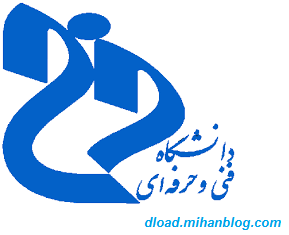
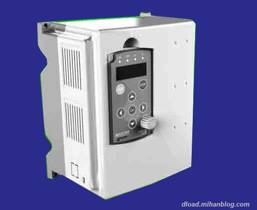

ادامه مطلب
طبقه بندی: دانشگاه فنی وحرفه ای،
طبقه بندی: درب اتوماتیک،
Mobile C [ C/C++ Compiler ]
ادامه مطلب
طبقه بندی: برنامه ونرم افزار اندروید،

از ویژگی های اصلی اینورتر میتوان به موارد زیر اشاره نمود:
كاهش انرژی مصرفی ، كاهش جریان راه اندازی ، حفاظت موتور در برابر اضافه بار ، حفاظت موتور در مقابل افزایش ولتاژ و نثبیت ولتاژ ، تغیر جهت دور بدون نیاز به كنتاكتور قدرت ،امکان برنامه ریزی و کنترل از راه دور ، كاهش ضربه های مكانیكی به موتور ، روشن و خاموش نمودن موتور بدون نیاز به قطع و وصل برق اصلی ، تنظیم سرعت موتور (كنترل دور) و...
به زبان ساده تر این دستگاه برق تکفاز متناوب را با مدارات خاص داخلی خود تبدیل به برق مستقیم میکند و در خروجی نیز مجددا آنرا تبدیل برق متناوب سه فاز میکند به نحوی که میتوان اصلی ترین پارامترهای خروجی(ولتاژ ، جریان ، جریان راه اندازی ، فرکانس ، تنظیم شیب های بالا رونده وپایین رونده ، ترمز dc و...) را در حد دلخواه تنظیم نمود.
طبقه بندی: راه اندازی موتور سه فاز با برق تکفاز، اینورتر،
جدیدترین روش کسب درآمد از اینترنت در خانه

امروزه جدیدترین روش های کسب درامد از طریق اینترنت در خانه ، مربوط به مایینینگ و دنیای ارزهای دیجتال مانند بیت کوین می باشد. همان طور که می دانید حسابی بازار ارز های دیجیتال ، استخراج و کسب درآمد به خصوص توسط ارز دیجیتال بیت کوین داغ شده است و در کل دنیا به سرعت در حال پیشرفت می باشد. به تازگی با یکی از جدیدترین و ساده ترین روش های استخراج (ماینینگ) و کسب درآمد از بیت کوین بدون نیاز به تجهیزات و تنها با یک مرورگر آشنا شده ایم که کاملا رایگان می باشد و روش راحتی برای درآمد دارد. در ادامه قصد داریم این روش را به شما معرفی کنیم. کسب درآمد با مرورگر کامپیوتر و بدون نیاز به هزینه یکی از بهترین روش هایی می باشد که تا کنون به آن برخورد کرده ایم.
روش جدید استخراج بیت کوین در خانه با مرورگر کاملا رایگان
بر روی ادامه مطلب کلیک نمائید...
ادامه مطلب
طبقه بندی: کسب درآمد،
فقط کافیه به اینترنت دسترسی داشته باشید این فایل رو اجرا کنید بعد همه درایورها و آپدیت درایورهای نصب شده رو نیز پیدا میکنه که بعد از تکمیل جستجو براحتی میتونین تیک درایور هایی که دوست ندارین نصب بشه رو بردارین و در پایان گزینه نصب رو بزنید .در ضمن این نرمافزار به همراه نصب درایورهای شما یه آنتی ویروس و دو تا مرورگر هم به صورت پیشفرض دانلود میکنه که احتمالا اسپانسر نرم افزار هستن، میتونین تیکش بردارین تا دانلود نشه چون هم از حجم اینترنت میخورن وهم پروسه دانلود و نصب درایورها رو طولانی تر میکنن.
حجم این نرمافزار هم چون بصورت آنلاین هست زیر یک مگابایته!!
برای دیدن عکس های محیط نرم افزار به ادامه مطلب مراجعه کنید
ادامه مطلب
طبقه بندی: درایور کامپیوتر، نرمافزار کامپیوتر،
دانلود Siemens SIMATIC STEP Professional 2017 (STEP 7 v5.6 + S7-PLCSIM v5.4 SP8 + S7-SCL v5.6 + S7-GRAPH v5.6 + S7-PCT v3.4 HF2) x64 - نرم افزار برنامه نویسی PLC های شرکت زیمنس
در این مطلب سعی شده تا تمامی برنامههای شرکت زیمنس و مشتقات آن جمع آوری گردد که به طور خلاصه شامل نرم افزارهای زیر میشود:
در این مطلب سعی شده تا تمامی برنامههای شرکت زیمنس و مشتقات آن جمع آوری گردد که به طور خلاصه شامل نرم افزارهای زیر میشود:
- Automation License Manager v5.3 SP4 HF1
- SIMATIC S7-GRAPH v5.6
- SIMATIC S7-SCL v5.6
- SIMATIC S7-PLCSIM v5.4 SP8
- SIMATIC S7-PCT v3.4 HF2
- SIMATIC S7 Web2PLC v1.0 SP3
- SIMATIC S7 Block Privacy v1.0 SP4
ادامه مطلب

شرکت Electronic Arts پس از ساخت نسخه بازی NFS shift برای کامپیوتر ها نسخه های دیگری از این بازی را برای سیستم عامل Symbian ساخت

این بازی با سنسور گوشی شما کار میکند
از امکانات این بازی میتوان به ماشین های مختلف آن اشاره کرد و همچنین گرافیک بالای بازی که شما را ساعت ها سرگرم میکند، همچنین چند شهر بزگ که Tokio و London و chicago هم جزو آن ها هستند. به طور کلی مشکل اصلی این بازی این است که باعث هنگ گوشی میشود و یا بعضی اوقات تصویر بازی محو میشود.
قابل اجرا بر روی تمامی گوشی های دارای سیستم عامل:
Symbian 3, Nokia Anna, Nokia Belle
و گوشی هایی چون:
Vivaz,Satio,i8910HD
نسخه ساین نشده
Unsigned
دانلود با حجم 82 مگابایت
منبع: www.myvivaz.mihanblog.comطبقه بندی: بازی سیمبینv5 s60 برای ویواز،

طبقه بندی: ورزشی، بازی اندروید،

دانلود بازی factorio برای PC
داستان اصلی بازی بر اساس شخصیت مردی است که یک فضانورد است. وی توسط انسانهای آینده به فضا فرستاده شده است و در این سفر به یک سیاره بیگانه می رسد. ماموریت او این است که مهاجرت انسانها را به این سیاره ممکن و ایمن سازد. این بازی در واقع بازی یافتن منابع و زنده ماندن است که یکسری عناصر استراتژیک realtime در آن وجوددارند. شما باید در این بازی یکسری عناصر و منابع را بیابید و استخراج کنید تا به وسیله آن ها ابزارهای مختلف بسازید و سپس به وسیله ابزاری که ساختید خواهید توانست تکنولوژی ها و ماشین های خیلی پیچیده تر بسازید.
حداقل سیستم مورد نیاز :
Operating System:Windows XP / Vista / Windows 7/ Windows 8.1 ( ۶۴ Bit )
CPU: Intel 2.5 GHz processor or higher.
RAM: 1 GB
Hard Disk Space: 500 MB
منبع：freegames.ir
حجم فایل : ۱۴۶ مگابایت
دانلود بازی با لینک مستقیم از سرور فری گیمز:
لینک دانلود بازی : Direct Link
پسورد فایل : www.freegames.ir
طبقه بندی: بازی کامپیوتر،
فقط وفقط با حجم 1.6GB بالینک مستقیم

طبقه بندی: بازی کامپیوتر، ورزشی،

طبقه بندی: بازی کامپیوتر، ورزشی،
دنبالک ها: >>>download<<<،

 لخ درب اتوماتیک هریش کامپایلر برنامه نویسی c,c++ برای اندروید راهنمای نصب و راه اندازی اینورتر metronic ،با قدرت 1.5kw جدیدترین و بی دردسرترین روش کسب درآمد از اینترنت در خانه (حتما تا آخرش ببخون،ضرر نمیکنی) دانلود نرم افزار driverpack solution نسخه آنلاین دانلود نرم افزار somatic s7 2017 برای ویندوز 8&10 دریافت اتریوم رایگان ورود به سیستم ناد- دانشگاه فنی وحرفه ای-بدون مشکل (لیست سرورهای سیستم ناد) دانلود بازی گرافیکی need for speed shift برای ویواز وسیمبین بازی فوتبال Pro Evolution Soccer 2011 v1.04 برای اندروید با گرافیک بی نظیر دانلود بازی factorio برای PC دانلود رایگان بازی pes2014 دانلود pes 2013 دانلود بازی ترافیک ریسر با پول بینهایت
لخ درب اتوماتیک هریش کامپایلر برنامه نویسی c,c++ برای اندروید راهنمای نصب و راه اندازی اینورتر metronic ،با قدرت 1.5kw جدیدترین و بی دردسرترین روش کسب درآمد از اینترنت در خانه (حتما تا آخرش ببخون،ضرر نمیکنی) دانلود نرم افزار driverpack solution نسخه آنلاین دانلود نرم افزار somatic s7 2017 برای ویندوز 8&10 دریافت اتریوم رایگان ورود به سیستم ناد- دانشگاه فنی وحرفه ای-بدون مشکل (لیست سرورهای سیستم ناد) دانلود بازی گرافیکی need for speed shift برای ویواز وسیمبین بازی فوتبال Pro Evolution Soccer 2011 v1.04 برای اندروید با گرافیک بی نظیر دانلود بازی factorio برای PC دانلود رایگان بازی pes2014 دانلود pes 2013 دانلود بازی ترافیک ریسر با پول بینهایت